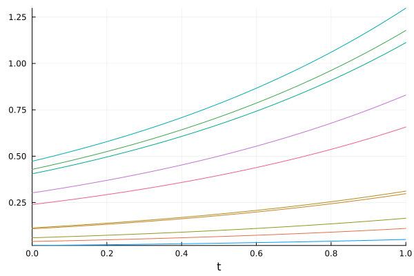
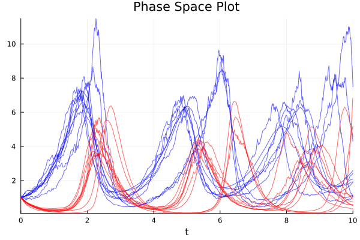
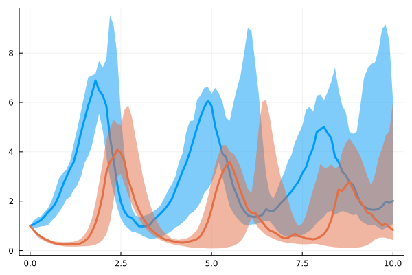
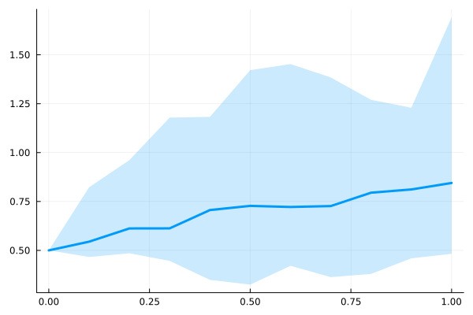
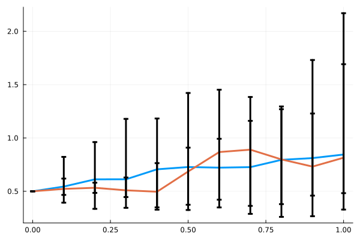
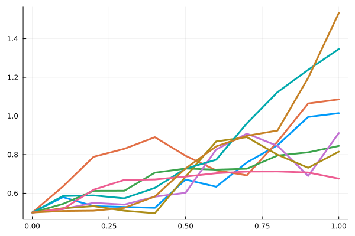

Parallel Ensemble Simulations Interface
Performing Monte Carlo simulations, solving with a predetermined set of initial conditions, and GPU-parallelizing a parameter search all fall under the ensemble simulation interface. This interface allows one to declare a template AbstractSciMLProblem to parallelize, tweak the template in trajectories for many trajectories, solve each in parallel batches, reduce the solutions down to specific answers, and compute summary statistics on the results.
Performing an Ensemble Simulation
Building a Problem
SciMLBase.EnsembleProblem — Type
struct EnsembleProblem{T, T2, T3, T4, T5} <: SciMLBase.AbstractEnsembleProblemDefines a structure to manage an ensemble (batch) of problems. Each field controls how the ensemble behaves during simulation.
Arguments
prob: The original base problem to replicate or modify.prob_func: A function that defines how to generate each subproblem.output_func: A function to post-process each individual simulation result.reduction: A function to combine results from all simulations.u_init: The initial container used to accumulate the results.safetycopy: Whether to copy the problem when creating subproblems (to avoid unintended modifications).
Solving the Problem
SciMLBase.__solve — Method
sim = solve(enprob, alg, ensemblealg = EnsembleThreads(), kwargs...)Solves the ensemble problem enprob with the algorithm alg using the ensembler ensemblealg.
The keyword arguments take in the arguments for the common solver interface and will pass them to the solver. The ensemblealg is optional, and will default to EnsembleThreads(). The special keyword arguments to note are:
trajectories: The number of simulations to run. This argument is required.batch_size: The size of the batches on which the reductions are applies. Defaults totrajectories.pmap_batch_size: The size of thepmapbatches. Default isbatch_size÷100 > 0 ? batch_size÷100 : 1seed: Master seed for reproducible ensemble solves. Pre-generates per-trajectory seeds.rng: Master RNG for reproducible ensemble solves. Takes priority overseed.rng_func: Custom per-trajectory RNG factory(ctx::EnsembleContext) -> AbstractRNG. Defaults todefault_rng_funcwhich seeds theTaskLocalRNG. Note:ctx.master_rngis shared across tasks in threaded modes. A customrng_funcmust not mutate it unless it is thread-safe.
EnsembleAlgorithms
The choice of ensemble algorithm allows for control over how the multiple trajectories are handled. Currently, the ensemble algorithm types are:
SciMLBase.EnsembleSerial — Type
struct EnsembleSerial <: SciMLBase.BasicEnsembleAlgorithmBasic ensemble solver which uses no parallelism and runs the problems in serial
SciMLBase.EnsembleThreads — Type
struct EnsembleThreads <: SciMLBase.BasicEnsembleAlgorithmThe default. This uses multithreading. It's local (single computer, shared memory) parallelism only. Lowest parallelism overhead for small problems.
SciMLBase.EnsembleDistributed — Type
struct EnsembleDistributed <: SciMLBase.BasicEnsembleAlgorithmUses pmap internally. It will use as many processors as you have Julia processes. To add more processes, use addprocs(n). These processes can be placed onto multiple different machines in order to parallelize across an entire cluster via passwordless SSH. See Julia's documentation for more details.
Recommended for the case when each trajectory calculation isn't “too quick” (at least about a millisecond each?), where the calculations of a given problem allocate memory, or when you have a very large ensemble. This can be true even on a single shared memory system because distributed process use separate garbage collectors and thus can be even faster than EnsembleThreads if the computation is complex enough.
SciMLBase.EnsembleSplitThreads — Type
struct EnsembleSplitThreads <: SciMLBase.BasicEnsembleAlgorithmA mixture of distributed computing with threading. The optimal version of this is to have a process on each node of a computer and then multithread on each system. However, this ensembler will simply use the node setup provided by the Julia Distributed processes, and thus it is recommended that you setup the processes in this fashion before using this ensembler. See Julia's Distributed documentation for more information
DiffEq Only (ODEProblem, SDEProblem)
| GPU Manufacturer | GPU Kernel Language | Julia Support Package | Backend Type |
|---|---|---|---|
| NVIDIA | CUDA | CUDA.jl | CUDA.CUDABackend() |
| AMD | ROCm | AMDGPU.jl | AMDGPU.ROCBackend() |
| Intel | OneAPI | OneAPI.jl | oneAPI.oneAPIBackend() |
| Apple (M-Series) | Metal | Metal.jl | Metal.MetalBackend() |
EnsembleGPUArray()- Requires installing andusing DiffEqGPU. This uses a GPU for computing the ensemble with hyperparallelism. It will automatically recompile your Julia functions to the GPU. A standard GPU sees a 5x performance increase over a 16 core Xeon CPU. However, there are limitations on what functions can auto-compile in this fashion, please see DiffEqGPU for more detailsEnsembleGPUKernel()- Requires installing andusing DiffEqGPU. This uses a GPU for computing the ensemble with hyperparallelism by building a custom GPU kernel. This can have drastically less overhead (for example, achieving 15x accelerating against Jax and PyTorch, see this paper for more details) but has limitations on what kinds of problems are compatible. See DiffEqGPU for more details
Choosing an Ensembler
For example, EnsembleThreads() is invoked by:
solve(ensembleprob, alg, EnsembleThreads(); trajectories = 1000)Solution Type
The resulting type is a EnsembleSimulation, which includes the array of solutions.
Plot Recipe
There is a plot recipe for a AbstractEnsembleSimulation which composes all of the plot recipes for the component solutions. The keyword arguments are passed along. A useful argument to use is linealpha which will change the transparency of the plots. An additional argument is idxs which allows you to choose which components of the solution to plot. For example, if the differential equation is a vector of 9 values, idxs=1:2:9 will plot only the solutions of the odd components. Another additional argument is zcolors (an alias of marker_z) which allows you to pass a zcolor for each series. For details about zcolor see the Series documentation for Plots.jl.
Analyzing an Ensemble Experiment
Analysis tools are included for generating summary statistics and summary plots for a EnsembleSimulation.
To use this functionality, import the analysis module via:
using SciMLBase.EnsembleAnalysisTime steps vs time points
For the summary statistics, there are two types. You can either summarize by time steps or by time points. Summarizing by time steps assumes that the time steps are all the same time point, i.e. the integrator used a fixed dt or the values were saved using saveat. Summarizing by time points requires interpolating the solution.
SciMLBase.EnsembleAnalysis.get_timestep — Function
get_timestep(sim, i)
Returns an iterator of each simulation at time step i
SciMLBase.EnsembleAnalysis.get_timepoint — Function
get_timepoint(sim, t)
Returns an iterator of each simulation at time point t
SciMLBase.EnsembleAnalysis.componentwise_vectors_timestep — Function
componentwise_vectors_timestep(sim, i)
Returns a vector of each simulation at time step i
SciMLBase.EnsembleAnalysis.componentwise_vectors_timepoint — Function
componentwise_vectors_timepoint(sim, t)
Returns a vector of each simulation at time point t
Summary Statistics Functions
Single Time Statistics
The available functions for time steps are:
SciMLBase.EnsembleAnalysis.timestep_mean — Function
timestep_mean(sim, i)
Computes the mean of each component at time step i
SciMLBase.EnsembleAnalysis.timestep_median — Function
timestep_median(sim, i)
Computes the median of each component at time step i
SciMLBase.EnsembleAnalysis.timestep_quantile — Function
timestep_quantile(sim, q, i)
Computes the quantile q of each component at time step i
SciMLBase.EnsembleAnalysis.timestep_meanvar — Function
timestep_meanvar(sim, i)
Computes the mean and variance of each component at time step i
SciMLBase.EnsembleAnalysis.timestep_meancov — Function
timestep_meancov(sim, i, j)
Computes the mean at i and j, and the covariance, for each component
SciMLBase.EnsembleAnalysis.timestep_meancor — Function
timestep_meancor(sim, i, j)
Computes the mean at i and j, and the correlation, for each component
SciMLBase.EnsembleAnalysis.timestep_weighted_meancov — Function
timestep_weighted_meancov(sim, W, i, j)
Computes the mean at i and j, and the weighted covariance W, for each component
The available functions for time points are:
SciMLBase.EnsembleAnalysis.timepoint_mean — Function
timepoint_mean(sim, t)
Computes the mean of each component at time t
SciMLBase.EnsembleAnalysis.timepoint_median — Function
timepoint_median(sim, t)
Computes the median of each component at time t
SciMLBase.EnsembleAnalysis.timepoint_quantile — Function
timepoint_quantile(sim, q, t)
Computes the quantile q of each component at time t
SciMLBase.EnsembleAnalysis.timepoint_meanvar — Function
timepoint_meanvar(sim, t)
Computes the mean and variance of each component at time t
SciMLBase.EnsembleAnalysis.timepoint_meancov — Function
timepoint_meancov(sim, t1, t2)
Computes the mean at t1 and t2, the covariance, for each component
SciMLBase.EnsembleAnalysis.timepoint_meancor — Function
timepoint_meancor(sim, t1, t2)
Computes the mean at t1 and t2, the correlation, for each component
SciMLBase.EnsembleAnalysis.timepoint_weighted_meancov — Function
timepoint_weighted_meancov(sim, W, t1, t2)
Computes the mean at t1 and t2, the weighted covariance W, for each component
Full Timeseries Statistics
Additionally, the following functions are provided for analyzing the full timeseries. The mean and meanvar versions return a DiffEqArray which can be directly plotted. The meancov and meancor return a matrix of tuples, where the tuples are the (mean_t1,mean_t2,cov or cor).
The available functions for the time steps are:
Missing docstring for timeseries_steps_mean. Check Documenter's build log for details.
Missing docstring for timeseries_steps_median. Check Documenter's build log for details.
Missing docstring for timeseries_steps_quantile. Check Documenter's build log for details.
Missing docstring for timeseries_steps_meanvar. Check Documenter's build log for details.
Missing docstring for timeseries_steps_meancov. Check Documenter's build log for details.
Missing docstring for timeseries_steps_meancor. Check Documenter's build log for details.
Missing docstring for timeseries_steps_weighted_meancov. Check Documenter's build log for details.
The available functions for the time points are:
SciMLBase.EnsembleAnalysis.timeseries_point_mean — Function
timeseries_point_mean(sim, ts)
Computes the mean at each time point in ts
SciMLBase.EnsembleAnalysis.timeseries_point_median — Function
timeseries_point_median(sim, ts)
Computes the median at each time point in ts
SciMLBase.EnsembleAnalysis.timeseries_point_quantile — Function
timeseries_point_quantile(sim, q, ts)
Computes the quantile q at each time point in ts
SciMLBase.EnsembleAnalysis.timeseries_point_meanvar — Function
timeseries_point_meanvar(sim, ts)
Computes the mean and variance at each time point in ts
SciMLBase.EnsembleAnalysis.timeseries_point_meancov — Function
timeseries_point_meancov(sim, ts)
Computes the covariance matrix and means at each time point in ts
timeseries_point_meancov(sim, ts1, ts2)
SciMLBase.EnsembleAnalysis.timeseries_point_meancor — Function
timeseries_point_meancor(sim, ts)
Computes the correlation matrix and means at each time point in ts
timeseries_point_meancor(sim, ts1, ts2)
SciMLBase.EnsembleAnalysis.timeseries_point_weighted_meancov — Function
timeseries_point_weighted_meancov(sim, W, ts)
Computes the weighted covariance matrix and means at each time point in ts
timeseries_point_weighted_meancov(sim, W, ts1, ts2)
EnsembleSummary
SciMLBase.EnsembleSummary — Type
struct EnsembleSummary{T, N, Tt, S, S2, S3, S4, S5} <: SciMLBase.AbstractEnsembleSolution{T, N, S}The EnsembleSummary type is included to help with analyzing the general summary statistics. Two constructors are provided:
EnsembleSummary(sim; quantiles = [0.05, 0.95])
EnsembleSummary(sim, ts; quantiles = [0.05, 0.95])The first produces a (mean,var) summary at each time step. As with the summary statistics, this assumes that the time steps are all the same. The second produces a (mean,var) summary at each time point t in ts. This requires the ability to interpolate the solution. Quantile is used to determine the qlow and qhigh quantiles at each timepoint. It defaults to the 5% and 95% quantiles.
Plot Recipe
The EnsembleSummary comes with a plot recipe for visualizing the summary statistics. The extra keyword arguments are:
idxs: the solution components to plot. Defaults to plotting all components.error_style: The style for plotting the error. Defaults toribbon. Other choices are:barsfor error bars and:nonefor no error bars.ci_type: Defaults to:quantilewhich has(qlow,qhigh)quantiles whose limits were determined when constructing theEnsembleSummary. Gaussian CI1.96*(standard error of the mean)can be set usingci_type=:SEM.
One useful argument is fillalpha which controls the transparency of the ribbon around the mean.
Example 1: Solving an ODE With Different Initial Conditions
Random Initial Conditions
Let's test the sensitivity of the linear ODE to its initial condition. To do this, we would like to solve the linear ODE 100 times and plot what the trajectories look like. Let's start by opening up some extra processes so that way the computation will be parallelized. Here we will choose to use distributed parallelism, which means that the required functions must be made available to all processes. This can be achieved with @everywhere macro:
using Distributed
using OrdinaryDiffEq
using Plots
addprocs()
@everywhere using OrdinaryDiffEqNow let's define the linear ODE, which is our base problem:
# Linear ODE which starts at 0.5 and solves from t=0.0 to t=1.0
prob = ODEProblem((u, p, t) -> 1.01u, 0.5, (0.0, 1.0))For our ensemble simulation, we would like to change the initial condition around. This is done through the prob_func. This function takes in the base problem and modifies it to create the new problem that the trajectory actually solves. The prob_func has the signature prob_func(prob, ctx) where:
probis the base problem to be modifiedctxis anEnsembleContextwith fieldssim_id(unique trajectory index,1totrajectories),repeat(rerun iteration, starts at1),rng(per-trajectory RNG),sim_seed,worker_id, andmaster_rng
Here, we will take the base problem, multiply the initial condition by a rand(), and use that for calculating the trajectory:
@everywhere function prob_func(prob, ctx)
remake(prob, u0 = rand() * prob.u0)
endNow we build and solve the EnsembleProblem with this base problem and prob_func:
ensemble_prob = EnsembleProblem(prob, prob_func = prob_func)
sim = solve(ensemble_prob, Tsit5(), EnsembleDistributed(), trajectories = 10)We can use the plot recipe to plot what the 10 ODEs look like:
plot(sim, linealpha = 0.4)We note that if we wanted to find out what the initial condition was for a given trajectory, we can retrieve it from the solution. sim[i] returns the ith solution object. sim[i].prob is the problem that specific trajectory solved, and sim[i].prob.u0 would then be the initial condition used in the ith trajectory.
Note: If the problem has callbacks, the functions for the condition and affect! must be named functions (not anonymous functions).
Using multithreading
The previous ensemble simulation can also be parallelized using a multithreading approach, which will make use of the different cores within a single computer. Because the memory is shared across the different threads, it is not necessary to use the @everywhere macro. Instead, the same problem can be implemented simply as:
using OrdinaryDiffEq
using SciMLBase
prob = ODEProblem((u, p, t) -> 1.01u, 0.5, (0.0, 1.0))
function prob_func(prob, ctx)
remake(prob, u0 = rand() * prob.u0)
end
ensemble_prob = EnsembleProblem(prob, prob_func = prob_func)
sim = solve(ensemble_prob, Tsit5(), EnsembleThreads(), trajectories = 10)
using Plots;
plot(sim);
The number of threads to be used has to be defined outside of Julia, in the environmental variable JULIA_NUM_THREADS (see Julia's documentation for details).
Pre-Determined Initial Conditions
Often, you may already know what initial conditions you want to use. This can be specified by ctx.sim_id in the prob_func. The sim_id is the unique index of each trajectory. So, if we have trajectories=100, then we have ctx.sim_id as some index in 1:100, and it's different for each trajectory.
So, if we wanted to use a grid of evenly spaced initial conditions from 0 to 1, we could simply index the linspace type:
initial_conditions = range(0, stop = 1, length = 100)
function prob_func(prob, ctx)
remake(prob, u0 = initial_conditions[ctx.sim_id])
endprob_func (generic function with 1 method)It's worth noting that if you run this code successfully, there will be no visible output.
Example 2: Solving an SDE with Different Parameters
Let's solve the same SDE, but with varying parameters. Let's create a Lotka-Volterra system with multiplicative noise. Our Lotka-Volterra system will have as its drift component:
function f(du, u, p, t)
du[1] = p[1] * u[1] - p[2] * u[1] * u[2]
du[2] = -3 * u[2] + u[1] * u[2]
endf (generic function with 1 method)For our noise function, we will use multiplicative noise:
function g(du, u, p, t)
du[1] = p[3] * u[1]
du[2] = p[4] * u[2]
endg (generic function with 1 method)Now we build the SDE with these functions:
using StochasticDiffEq
p = [1.5, 1.0, 0.1, 0.1]
prob = SDEProblem(f, g, [1.0, 1.0], (0.0, 10.0), p)SDEProblem with uType Vector{Float64} and tType Float64. In-place: true
Non-trivial mass matrix: false
timespan: (0.0, 10.0)
u0: 2-element Vector{Float64}:
1.0
1.0This is the base problem for our study. What would like to do with this experiment is keep the same parameters in the deterministic component each time, but vary the parameters for the amount of noise using 0.3rand(2) as our parameters. Once again, we do this with a prob_func, and here we modify the parameters in prob.p:
# `p` is a global variable, referencing it would be type unstable.
# Using a let block defines a small local scope in which we can
# capture that local `p` which isn't redefined anywhere in that local scope.
# This allows it to be type stable.
prob_func = let p = p
(prob, ctx) -> begin
x = 0.3rand(2)
remake(prob, p = [p[1], p[2], x[1], x[2]])
end
end#2 (generic function with 1 method)Now we solve the problem 10 times and plot all of the trajectories in phase space:
ensemble_prob = EnsembleProblem(prob, prob_func = prob_func)
sim = solve(ensemble_prob, SRIW1(), trajectories = 10)
using Plots;
plot(sim, linealpha = 0.6, color = :blue, idxs = (0, 1), title = "Phase Space Plot");
plot!(sim, linealpha = 0.6, color = :red, idxs = (0, 2), title = "Phase Space Plot")
We can then summarize this information with the mean/variance bounds using a EnsembleSummary plot. We will take the mean/quantile at every 0.1 time units and directly plot the summary:
summ = EnsembleSummary(sim, 0:0.1:10)
plot(summ, fillalpha = 0.5)
Note that here we used the quantile bounds, which default to [0.05,0.95] in the EnsembleSummary constructor. We can change to standard error of the mean bounds using ci_type=:SEM in the plot recipe.
Example 3: Using the Reduction to Halt When Estimator is Within Tolerance
In this problem, we will solve the equation just as many times as needed to get the standard error of the mean for the final time point below our tolerance 0.5. Since we only care about the endpoint, we can tell the output_func to discard the rest of the data.
function output_func(sol, ctx)
last(sol), false
endoutput_func (generic function with 1 method)Our prob_func will simply randomize the initial condition:
using OrdinaryDiffEq
using SciMLBase
# Linear ODE which starts at 0.5 and solves from t=0.0 to t=1.0
prob = ODEProblem((u, p, t) -> 1.01u, 0.5, (0.0, 1.0))
function prob_func(prob, ctx)
remake(prob, u0 = rand() * prob.u0)
endprob_func (generic function with 1 method)Our reduction function will append the data from the current batch to the previous batch, and declare convergence if the standard error of the mean is calculated as sufficiently small:
using Statistics
function reduction(u, batch, I)
u = append!(u, batch)
finished = (var(u) / sqrt(last(I))) / mean(u) < 0.5
u, finished
endreduction (generic function with 1 method)Then we can define and solve the problem:
prob2 = EnsembleProblem(prob, prob_func = prob_func, output_func = output_func,
reduction = reduction, u_init = Vector{Float64}())
sim = solve(prob2, Tsit5(), trajectories = 10000, batch_size = 20)EnsembleSolution Solution of length 20 with uType:
Float64Since batch_size=20, this means that every 20 simulations, it will take this batch, append the results to the previous batch, calculate (var(u)/sqrt(last(I)))/mean(u), and if that's small enough, exit the simulation. In this case, the simulation exits only after 20 simulations (i.e. after calculating the first batch). This can save a lot of time!
In addition to saving time by checking convergence, we can save memory by reducing between batches. For example, say we only care about the mean at the end once again. Instead of saving the solution at the end for each trajectory, we can instead save the running summation of the endpoints:
function reduction(u, batch, I)
u + sum(batch), false
end
prob2 = EnsembleProblem(prob, prob_func = prob_func, output_func = output_func,
reduction = reduction, u_init = 0.0)
sim2 = solve(prob2, Tsit5(), trajectories = 100, batch_size = 20)EnsembleSolution Solution of length 1 with uType:
Float64this will sum up the endpoints after every 20 solutions, and save the running sum. The final result will have sim2.u as simply a number, and thus sim2.u/100 would be the mean.
Example 4: Using the Analysis Tools
In this example, we will show how to analyze a EnsembleSolution. First, let's generate a 10 solution Monte Carlo experiment. For our problem, we will use a 4x2 system of linear stochastic differential equations:
function f(du, u, p, t)
for i in 1:length(u)
du[i] = 1.01 * u[i]
end
end
function σ(du, u, p, t)
for i in 1:length(u)
du[i] = 0.87 * u[i]
end
end
using StochasticDiffEq
prob = SDEProblem(f, σ, ones(4, 2) / 2, (0.0, 1.0)) #prob_sde_2DlinearSDEProblem with uType Matrix{Float64} and tType Float64. In-place: true
Non-trivial mass matrix: false
timespan: (0.0, 1.0)
u0: 4×2 Matrix{Float64}:
0.5 0.5
0.5 0.5
0.5 0.5
0.5 0.5To solve this 10 times, we use the EnsembleProblem constructor and solve with trajectories=10. Since we wish to compare values at the timesteps, we need to make sure the steps all hit the same times. We thus set adaptive=false and explicitly give a dt.
prob2 = EnsembleProblem(prob)
sim = solve(prob2, SRIW1(), dt = 1 // 2^(3), trajectories = 10, adaptive = false)EnsembleSolution Solution of length 10 with uType:
RODESolution{Float64, 3, Vector{Matrix{Float64}}, Nothing, Nothing, Vector{Float64}, DiffEqNoiseProcess.NoiseProcess{Float64, 3, Float64, Matrix{Float64}, Matrix{Float64}, Vector{Matrix{Float64}}, typeof(DiffEqNoiseProcess.INPLACE_WHITE_NOISE_DIST), typeof(DiffEqNoiseProcess.INPLACE_WHITE_NOISE_BRIDGE), Nothing, true, ResettableStacks.ResettableStack{Tuple{Float64, Matrix{Float64}, Matrix{Float64}}, true}, ResettableStacks.ResettableStack{Tuple{Float64, Matrix{Float64}, Matrix{Float64}}, true}, DiffEqNoiseProcess.RSWM{Float64}, Nothing, Random.Xoshiro}, Nothing, SDEProblem{Matrix{Float64}, Tuple{Float64, Float64}, true, SciMLBase.NullParameters, Nothing, SDEFunction{true, SciMLBase.AutoSpecialize, typeof(Main.f), typeof(Main.σ), LinearAlgebra.UniformScaling{Bool}, Nothing, Nothing, Nothing, Nothing, Nothing, Nothing, Nothing, Nothing, Nothing, Nothing, Nothing, typeof(SciMLBase.DEFAULT_OBSERVED), Nothing, Nothing, Nothing}, typeof(Main.σ), Base.Pairs{Symbol, Union{}, Nothing, @NamedTuple{}}, Nothing}, StochasticDiffEqHighOrder.SRIW1, OrdinaryDiffEqCore.InterpolationData{SDEFunction{true, SciMLBase.AutoSpecialize, typeof(Main.f), typeof(Main.σ), LinearAlgebra.UniformScaling{Bool}, Nothing, Nothing, Nothing, Nothing, Nothing, Nothing, Nothing, Nothing, Nothing, Nothing, Nothing, typeof(SciMLBase.DEFAULT_OBSERVED), Nothing, Nothing, Nothing}, Vector{Matrix{Float64}}, Vector{Float64}, Vector{Vector{Matrix{Float64}}}, Nothing, StochasticDiffEqHighOrder.SRIW1Cache{Matrix{Float64}, Matrix{Float64}, Matrix{Float64}}, Nothing}, SciMLBase.DEStats, Nothing, Nothing}Note that if you don't do the timeseries_steps calculations, this code is compatible with adaptive timestepping. Using adaptivity is usually more efficient!
We can compute the mean and the variance at the 3rd timestep using:
using SciMLBase.EnsembleAnalysis
m, v = timestep_meanvar(sim, 3)([0.5776139964300456 0.47843946799710785; 0.7572166486725508 0.6791648333346394; 0.6839875327172886 0.6621235567437179; 0.614166772708826 0.6834036976849125], [0.050066968995119844 0.012207832230664961; 0.08180185437154294 0.07626924810736888; 0.1103319107834142 0.0331995978360085; 0.06374778685521532 0.1273741003276891])or we can compute the mean and the variance at the t=0.5 using:
m, v = timepoint_meanvar(sim, 0.5)([0.6284179335153186 0.6672500759688138; 0.8325061285099422 0.7515683581016274; 0.7805650203250083 0.7137289222717489; 0.7578687673925986 0.8810012420718707], [0.0492986381285023 0.035511280521479144; 0.11642764049371923 0.05138599989685507; 0.15917500963426404 0.12597992718253392; 0.18892988834207028 0.3088822368988993])We can get a series for the mean and the variance at each time step using:
m_series, v_series = timeseries_steps_meanvar(sim)([0.5 0.5; 0.5 0.5; 0.5 0.5; 0.5 0.5;;; 0.5873013581300073 0.5146674109344758; 0.6893478536137678 0.5964688676272953; 0.6254717148223534 0.5653608935726605; 0.5315868801866467 0.5359941432964603;;; 0.5776139964300456 0.47843946799710785; 0.7572166486725508 0.6791648333346394; 0.6839875327172886 0.6621235567437179; 0.614166772708826 0.6834036976849125;;; 0.5724085465441634 0.5108316666937163; 0.8517670865460103 0.6340976432949162; 0.7432967499532886 0.7116279036853054; 0.625970781907725 0.6827427233167055;;; 0.6284179335153186 0.6672500759688138; 0.8325061285099422 0.7515683581016274; 0.7805650203250083 0.7137289222717489; 0.7578687673925986 0.8810012420718707;;; 0.6893970075064236 0.7637522066870841; 0.869257409693866 0.89217158028032; 0.8215014201326405 0.747323468088822; 0.8735512648450282 0.8400242171722957;;; 0.7638109775535353 0.7979353491507367; 0.8899839774284384 1.061028624266164; 0.7726698181850443 0.8090059863831076; 0.9948403865464992 1.055599267425006;;; 0.8514247819276473 0.8172665236443962; 1.0302642507769817 1.2090467767956616; 0.8388977589138221 1.0306644966430005; 0.9988131441949695 1.3210875666175164;;; 0.9898592032237478 1.01739252985554; 1.1809143256908445 1.2914154252560093; 0.9477153045788796 1.153714552463511; 1.2581519240070693 1.5961903264990245], [0.0 0.0; 0.0 0.0; 0.0 0.0; 0.0 0.0;;; 0.023614746166752496 0.009811271509268684; 0.03764398360431532 0.022605565276897797; 0.029749198696076562 0.02121523684399208; 0.017240317158286028 0.03856986809606743;;; 0.050066968995119844 0.012207832230664961; 0.08180185437154294 0.07626924810736888; 0.1103319107834142 0.0331995978360085; 0.06374778685521532 0.1273741003276891;;; 0.03504455636114801 0.026420299098376718; 0.0931388805502244 0.037867106004988084; 0.08119589115621294 0.1073194498705923; 0.13658393978234118 0.16862352383593715;;; 0.0492986381285023 0.035511280521479144; 0.11642764049371923 0.05138599989685507; 0.15917500963426404 0.12597992718253392; 0.18892988834207028 0.3088822368988993;;; 0.060369446570881946 0.09313230840128198; 0.2089942887739636 0.13240023715109328; 0.16915946788879802 0.15178468508154078; 0.24209985618615512 0.22193798653923352;;; 0.06837448463005791 0.1335149241202276; 0.11500993279140971 0.15297272077896398; 0.15140003174498162 0.284099835890805; 0.4337891357495605 0.7383603976722339;;; 0.15509502645248335 0.2511298034128682; 0.21610669598816937 0.3320891836850286; 0.0876818520700289 0.6965755004038507; 0.5204019978786684 1.6156031435324953;;; 0.1151352972761839 0.4717979119113748; 0.2620291149200311 0.41543468805188666; 0.1994562884365342 0.9346102956122895; 0.937011275110665 1.399076527079843])or at chosen values of t:
ts = 0:0.1:1
m_series = timeseries_point_mean(sim, ts)t: 0.0:0.1:1.0
u: 11-element Vector{Matrix{Float64}}:
[0.5 0.5; 0.5 0.5; 0.5 0.5; 0.5 0.5]
[0.5698410865040058 0.5117339287475806; 0.6514782828910141 0.5771750941018363; 0.6003773718578826 0.5522887148581285; 0.5252695041493175 0.5287953146371683]
[0.5814889411100302 0.49293064517205504; 0.7300691306490376 0.6460864470517018; 0.6605812055593145 0.6234184914752949; 0.5811348156999543 0.6244398759295318]
[0.5755318164756927 0.4913963474757512; 0.7950368238219345 0.6611379573187502; 0.7077112196116886 0.681925295520353; 0.6188883763883857 0.6831393079376298]
[0.5836104239383946 0.5421153485487358; 0.8479148949387966 0.6575917862562586; 0.7507504040276325 0.712048107402594; 0.6523503790046997 0.7223944270677386]
[0.6284179335153187 0.6672500759688138; 0.8325061285099421 0.7515683581016275; 0.7805650203250083 0.713728922271749; 0.7578687673925985 0.8810012420718707]
[0.6772011927082027 0.7444517805434302; 0.8619071534570812 0.8640509358445814; 0.8133141401711141 0.7406045589254073; 0.8504147653545424 0.8482196221522107]
[0.7340453895346906 0.7842620921652756; 0.8816933503346094 0.9934858066718263; 0.7922024589640827 0.7843329790653933; 0.9463247378659106 0.9693692473239219]
[0.7988564993031803 0.8056678189482005; 0.9460960867678558 1.120235885277963; 0.7991609944765555 0.8976693904870648; 0.9964294896058874 1.1617945871020106]
[0.8791116661868674 0.8572917248866251; 1.060394265759754 1.2255205064877308; 0.8606612680468336 1.0552745078071026; 1.0506809001573898 1.3761081185938182]
[0.9898592032237478 1.0173925298555395; 1.1809143256908443 1.2914154252560093; 0.9477153045788798 1.1537145524635108; 1.2581519240070693 1.5961903264990247]Note that these mean and variance series can be directly plotted. We can compute covariance matrices similarly:
timeseries_steps_meancov(sim) # Use the time steps, assume fixed dt
timeseries_point_meancov(sim, 0:(1 // 2 ^ (3)):1, 0:(1 // 2 ^ (3)):1) # Use time points, interpolate9×9 Matrix{Tuple{Matrix{Float64}, Matrix{Float64}, Matrix{Float64}}}:
([0.5 0.5; 0.5 0.5; 0.5 0.5; 0.5 0.5], [0.5 0.5; 0.5 0.5; 0.5 0.5; 0.5 0.5], [0.0 0.0; 0.0 0.0; 0.0 0.0; 0.0 0.0]) … ([0.989859 1.01739; 1.18091 1.29142; 0.947715 1.15371; 1.25815 1.59619], [0.5 0.5; 0.5 0.5; 0.5 0.5; 0.5 0.5], [0.0 0.0; 0.0 0.0; 0.0 0.0; 0.0 0.0])
([0.5 0.5; 0.5 0.5; 0.5 0.5; 0.5 0.5], [0.587301 0.514667; 0.689348 0.596469; 0.625472 0.565361; 0.531587 0.535994], [0.0 0.0; 0.0 0.0; 0.0 0.0; 0.0 0.0]) ([0.989859 1.01739; 1.18091 1.29142; 0.947715 1.15371; 1.25815 1.59619], [0.587301 0.514667; 0.689348 0.596469; 0.625472 0.565361; 0.531587 0.535994], [0.00725542 -0.0212953; 0.0766256 0.065404; -0.0112564 0.032468; 0.0501293 0.178615])
([0.5 0.5; 0.5 0.5; 0.5 0.5; 0.5 0.5], [0.577614 0.478439; 0.757217 0.679165; 0.683988 0.662124; 0.614167 0.683404], [0.0 0.0; 0.0 0.0; 0.0 0.0; 0.0 0.0]) ([0.989859 1.01739; 1.18091 1.29142; 0.947715 1.15371; 1.25815 1.59619], [0.577614 0.478439; 0.757217 0.679165; 0.683988 0.662124; 0.614167 0.683404], [0.0105878 -0.0136786; 0.0609626 0.110396; 0.0345272 0.111214; 0.145134 0.279855])
([0.5 0.5; 0.5 0.5; 0.5 0.5; 0.5 0.5], [0.572409 0.510832; 0.851767 0.634098; 0.743297 0.711628; 0.625971 0.682743], [0.0 0.0; 0.0 0.0; 0.0 0.0; 0.0 0.0]) ([0.989859 1.01739; 1.18091 1.29142; 0.947715 1.15371; 1.25815 1.59619], [0.572409 0.510832; 0.851767 0.634098; 0.743297 0.711628; 0.625971 0.682743], [0.00706547 0.0159909; 0.053149 0.0813561; 0.0320457 0.119471; 0.263608 0.370997])
([0.5 0.5; 0.5 0.5; 0.5 0.5; 0.5 0.5], [0.628418 0.66725; 0.832506 0.751568; 0.780565 0.713729; 0.757869 0.881001], [0.0 0.0; 0.0 0.0; 0.0 0.0; 0.0 0.0]) ([0.989859 1.01739; 1.18091 1.29142; 0.947715 1.15371; 1.25815 1.59619], [0.628418 0.66725; 0.832506 0.751568; 0.780565 0.713729; 0.757869 0.881001], [0.0417345 0.064249; 0.051426 0.0965232; 0.0783205 0.0811934; 0.338545 0.474739])
([0.5 0.5; 0.5 0.5; 0.5 0.5; 0.5 0.5], [0.689397 0.763752; 0.869257 0.892172; 0.821501 0.747323; 0.873551 0.840024], [0.0 0.0; 0.0 0.0; 0.0 0.0; 0.0 0.0]) … ([0.989859 1.01739; 1.18091 1.29142; 0.947715 1.15371; 1.25815 1.59619], [0.689397 0.763752; 0.869257 0.892172; 0.821501 0.747323; 0.873551 0.840024], [0.0470407 0.159927; 0.119518 0.191222; 0.157349 0.210435; 0.380552 0.386515])
([0.5 0.5; 0.5 0.5; 0.5 0.5; 0.5 0.5], [0.763811 0.797935; 0.889984 1.06103; 0.77267 0.809006; 0.99484 1.0556], [0.0 0.0; 0.0 0.0; 0.0 0.0; 0.0 0.0]) ([0.989859 1.01739; 1.18091 1.29142; 0.947715 1.15371; 1.25815 1.59619], [0.763811 0.797935; 0.889984 1.06103; 0.77267 0.809006; 0.99484 1.0556], [0.0509867 0.152386; 0.0921275 0.209874; 0.0559116 0.370148; 0.556882 0.935652])
([0.5 0.5; 0.5 0.5; 0.5 0.5; 0.5 0.5], [0.851425 0.817267; 1.03026 1.20905; 0.838898 1.03066; 0.998813 1.32109], [0.0 0.0; 0.0 0.0; 0.0 0.0; 0.0 0.0]) ([0.989859 1.01739; 1.18091 1.29142; 0.947715 1.15371; 1.25815 1.59619], [0.851425 0.817267; 1.03026 1.20905; 0.838898 1.03066; 0.998813 1.32109], [0.111478 0.336622; 0.205712 0.355169; 0.0809668 0.604437; 0.680747 1.4345])
([0.5 0.5; 0.5 0.5; 0.5 0.5; 0.5 0.5], [0.989859 1.01739; 1.18091 1.29142; 0.947715 1.15371; 1.25815 1.59619], [0.0 0.0; 0.0 0.0; 0.0 0.0; 0.0 0.0]) ([0.989859 1.01739; 1.18091 1.29142; 0.947715 1.15371; 1.25815 1.59619], [0.989859 1.01739; 1.18091 1.29142; 0.947715 1.15371; 1.25815 1.59619], [0.115135 0.471798; 0.262029 0.415435; 0.199456 0.93461; 0.937011 1.39908])For general analysis, we can build a EnsembleSummary type.
summ = EnsembleSummary(sim)EnsembleSolution Solution of length 72 with uType:
Float64will summarize at each time step, while
summ = EnsembleSummary(sim, 0.0:0.1:1.0)EnsembleSolution Solution of length 88 with uType:
Float64will summarize at the 0.1 time points using the interpolations. To visualize the results, we can plot it. Since there are 8 components to the differential equation, this can get messy, so let's only plot the 3rd component:
using Plots;
plot(summ; idxs = 3);
We can change to errorbars instead of ribbons and plot two different indices:
plot(summ; idxs = (3, 5), error_style = :bars)
Or we can simply plot the mean of every component over time:
plot(summ; error_style = :none)